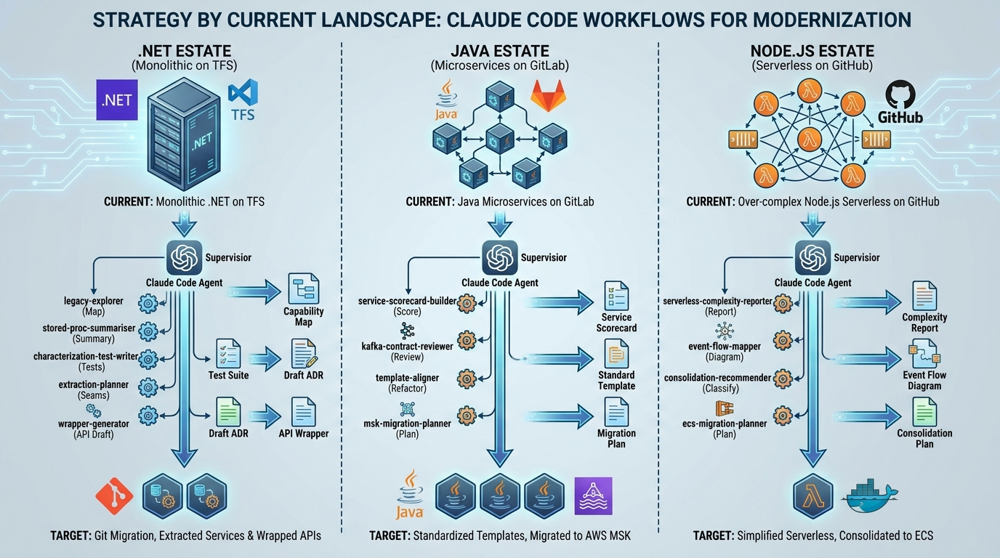

Workflows & Landscape
Strategy by Current Landscape: .NET, Java, and Node.js Estates

Image generated by Google Gemini (gemini-3.1-flash-image-preview)
Workflows & Landscape

Image generated by Google Gemini (gemini-3.1-flash-image-preview)